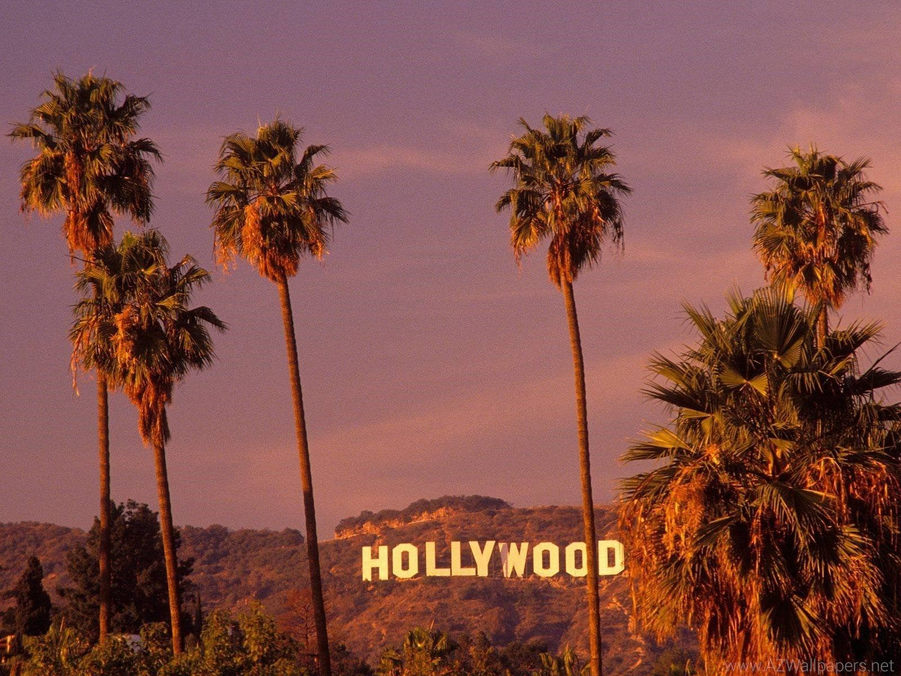
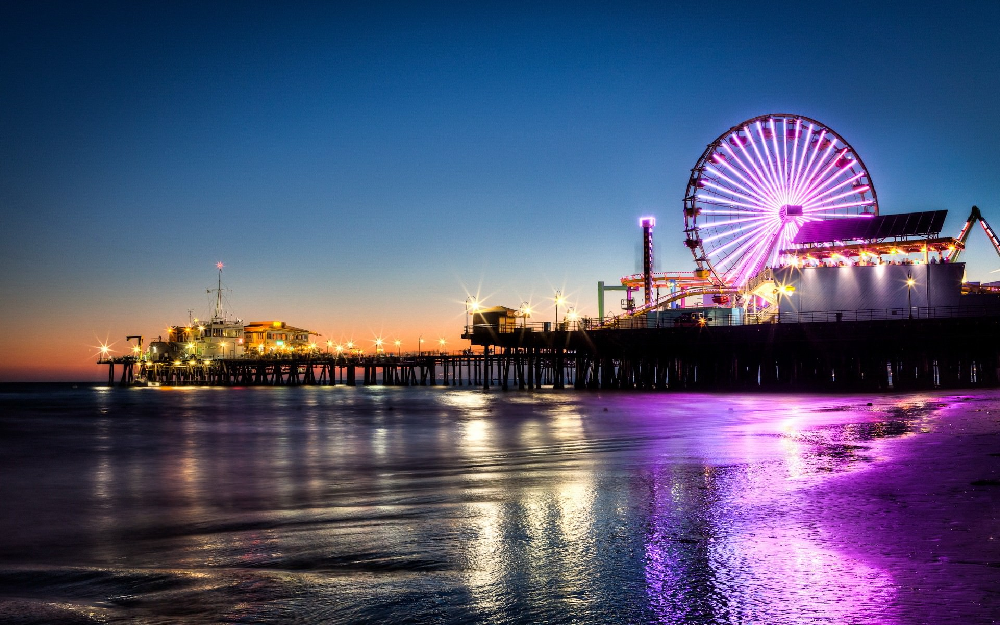

Los Angeles




Los Angeles está na lista de qualquer turista apaixonado por cinema. A cidade é
conhecida por seus estúdios e por ser residência de grande parte das celebridades americanas. Por lá
existem até alguns tours fechados para quem queira ver a casa das maiores estrelas que vivem na cidade.
E é preciso agendar com antecedência, eles esgotam super rápido.
Imensa e controversa, conhecida como “Cidade Proibida”, Los Angeles – ou LA – é a cidade dos famosos,
tanto por seus filmes quanto por seus crimes. Curta os melhores pontos turísticos de Los Angeles para
colocar em seu roteiro e conheça o melhor da cidade.
Hollywood Walk of Fame
Na mesma Hollywood Boulevard fica o Chinese Theater, um cinema lendário fundado
em 1927 com o formato de um templo chinês. Do lado de fora dele é o local onde ficaram gravados no
cimento os pés e as mãos das maiores estrelas do cinema americano, assim como seus autógrafos. Já no
interior do edifício fica a maior sala de IMAX do mundo.
Chinese Theater
Ao visitar Los Angeles, todos pensam logo em ir até Hollywood, onde o cinema
norte-americano começou. E uma das maiores atrações da cidade fica lá, a Calçada da Fama, ou em inglês,
a “Hollywood Walk of Fame”. Ao longo de 2 quilômetros da Hollywood Boulevard e mais de 700 metros da
Vine Street se encontram mais de 2500 estrelas no chão, homenageando artistas do ramo do cinema, música,
teatro, televisão e rádio. Como os nomes das maiores celebridades estão ali, é bastante divertido ir
andando pela rua olhando para o chão e procurando os seus artistas preferidos.
Paramount Studios
Esse foi o único estúdio dos grandes que ainda estão localizados no bairro de
Hollywood. O Paramount Studios é o mais completo levando em conta a história do cinema e das produções
hollywoodianas, com tours mais sérios e comprometidos com a indústria cinematográfica, mas é proibido
fotografar em seu interior.